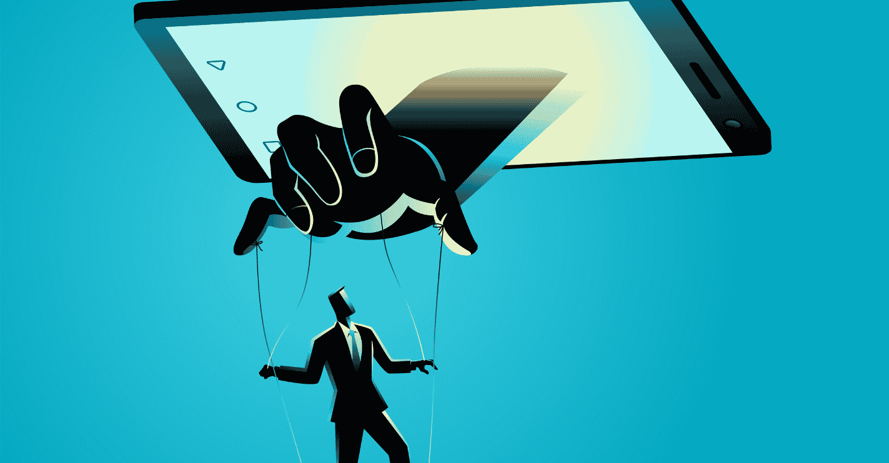

Celmodułu:
Celem tego modułu jest zapoznanie uczestników z zagrożeniami, które mogą wystąpić podczas korzystania z mediów społecznościowych, oraz przedstawienie zasad bezpiecznego korzystania z tych platform. Uczestnicy nauczą się, jak chronić swoją prywatność, rozpoznawać oszustwa i fałszywe konta, a także jak skutecznie zarządzać ustawieniami bezpieczeństwa na platformach społecznościowych.
Jakie zagrożenia czyhają w social media?
Media społecznościowe to popularne platformy, które umożliwiają nawiązywanie kontaktów, dzielenie się informacjami i tworzenie treści. Jednakże, ich popularność przyciąga również cyberprzestępców, którzy wykorzystują różne techniki, aby zdobyć dane użytkowników lub przeprowadzić oszustwa. Poniżej omawiamy główne zagrożenia, które mogą wystąpić podczas korzystania z mediów społecznościowych.

Phishing i oszustwa
Phishing to jeden z najczęstszych typów oszustw internetowych, który może również występować w mediach społecznościowych. Oszuści tworzą fałszywe profile lub strony, które wyglądają na oficjalne, np. fałszywe strony logowania do banków czy popularnych serwisów. Ich celem jest wyłudzenie danych osobowych lub danych logowania.
Phishing w wiadomościach: Często atakujący wysyłają fałszywe wiadomości (np. w Messengerze, WhatsAppie, Instagramie), w których nakłaniają do kliknięcia w podejrzane linki.
Linki i załączniki: Kliknięcie w złośliwy link lub otwarcie podejrzanego załącznika może prowadzić do infekcji urządzenia złośliwym oprogramowaniem, które wykrada dane.
Prywatność i udostępnianie danych
Jednym z głównych zagrożeń związanych z korzystaniem z mediów społecznościowych jest niekontrolowane udostępnianie danych osobowych. Często użytkownicy dzielą się zbyt dużą ilością informacji, które mogą zostać wykorzystane przez cyberprzestępców, np. do kradzieży tożsamości.
Prywatność w ustawieniach konta: Wiele osób nie zdaje sobie sprawy, jak ważne jest ustawienie odpowiednich preferencji prywatności, aby ograniczyć dostęp do swoich danych.
Zbyt szczegółowe informacje: Informacje takie jak data urodzenia, adres, imiona członków rodziny, mogą zostać wykorzystane do manipulacji lub kradzieży tożsamości.
Fałszywe konta i manipulacje
Na platformach społecznościowych często występują fałszywe konta, które mogą być używane do szerzenia dezinformacji, manipulacji lub nawet do oszustw. Takie konta mogą podszywać się pod osoby lub firmy, a ich celem jest np. wyłudzenie pieniędzy, pozyskanie danych osobowych lub po prostu stworzenie fałszywego wrażenia popularności.
Fałszywe konta: Oszuści mogą tworzyć profile, które wyglądają na autentyczne, np. podszywając się pod celebrytów, influencerów lub firmy. Wykorzystują one zaufanie użytkowników, aby przeprowadzać manipulacje lub oszustwa.
Manipulacja: Fałszywe konta mogą rozprzestrzeniać dezinformację, fałszywe wiadomości lub reklamy, które prowadzą do niebezpiecznych stron internetowych lub naciągają użytkowników na pieniądze.
Zasady bezpieczeństwa w mediach społecznościowych
Aby zapewnić sobie bezpieczeństwo podczas korzystania z mediów społecznościowych, należy przestrzegać kilku kluczowych zasad, które pomogą chronić dane osobowe i zapobiegać niebezpiecznym sytuacjom.
Ograniczenie dostępu do danych
Najważniejszym krokiem w zapewnieniu bezpieczeństwa w mediach społecznościowych jest ograniczenie dostępu do naszych danych tylko do zaufanych osób. Oto kilka wskazówek:
Nieudostępnianie zbyt wielu danych osobowych: Staraj się nie podawać w mediach społecznościowych informacji takich jak pełny adres, numer telefonu, data urodzenia, czy szczegóły dotyczące rodziny.
Ograniczenie geolokalizacji: Unikaj publikowania informacji o swojej lokalizacji w czasie rzeczywistym, zwłaszcza w publicznych postach.
Ustawienia prywatności
Większość platform społecznościowych umożliwia ustawienie preferencji prywatności, które pozwalają kontrolować, kto ma dostęp do naszych postów i danych. Należy regularnie sprawdzać i dostosowywać te ustawienia, aby mieć pewność, że nasze dane nie trafiają w niepowołane ręce.
Ustawienia publiczne: Upewnij się, że tylko zaufani użytkownicy mogą przeglądać Twoje posty. Zmień ustawienia prywatności na „Tylko dla znajomych” lub „Tylko dla wybranych osób”.
Ustawienia bezpieczeństwa: Aktywuj opcje, które umożliwiają monitorowanie logowania się do konta i powiadamianie o podejrzanych aktywnościach.
Rozpoznawanie podejrzanych linków i profili
Korzystając z mediów społecznościowych, ważne jest, aby zachować ostrożność przy klikaniu w linki i akceptowaniu zaproszeń do znajomych.
Nieklikaj w podejrzane linki: Zawsze sprawdzaj adresy URL, zanim klikniesz w linki, zwłaszcza jeśli otrzymałeś je w wiadomościach od nieznajomych lub z nieznanych źródeł.
Uważaj na fałszywe konta: Jeśli konto naśladuje znaną osobę, firmę lub organizację, ale jego aktywność jest podejrzana (np. prośba o pieniądze, dziwne posty), lepiej je zignorować lub zgłosić jako fałszywe.
Bezpieczne korzystanie z mediów społecznościowych wymaga świadomości zagrożeń, które mogą pojawić się na tych platformach, oraz przestrzegania zasad ochrony prywatności. Ograniczając dostęp do swoich danych, odpowiednio ustawiając prywatność konta i ucząc się rozpoznawać oszustwa i fałszywe konta, można znacznie zwiększyć swoje bezpieczeństwo w sieci.
Regularne przeglądanie ustawień prywatności i dostosowanie ich do swoich potrzeb pozwala uniknąć przypadkowego udostępnienia zbyt wielu informacji. Korzystanie z silnych haseł oraz aktywowanie dwustopniowej autoryzacji (2FA) zwiększa ochronę konta przed przejęciem. Ważne jest również unikanie podejrzanych linków i aplikacji, które mogą zawierać złośliwe oprogramowanie.
Warto pamiętać, aby zachować ostrożność przy akceptowaniu zaproszeń od nieznajomych i weryfikować autentyczność profili. Uważność oraz edukacja w zakresie zagrożeń pozwalają nie tylko chronić siebie, ale także pozytywnie wpływają na bezpieczeństwo całej naszej sieci kontaktów. Odpowiedzialne korzystanie z mediów społecznościowych to klucz do zachowania prywatności i ochrony przed cyberzagrożeniami.